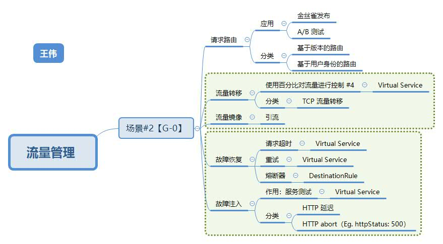

流量管理 #

组件 #

Pilot Design Overview (来自 Istio old_pilot_repo)
图例说明：图中红色的线表示控制流，黑色的线表示数据流。蓝色部分为和Pilot相关的组件。
-
控制面组件
- Discovery Services
- istio crd
-
数据面组件
- Pilot-agent
- Envoy
Istio 庖丁解牛1：组件概览 腾讯云 钟华
流量管理模型 #
-
VirtualService
定义了一系列针对指定服务的流量路由规则;
将流量路由到给定目标地址;
通常和目标规则（DestinationRule）成对出现; -
DestinationRule
定义虚拟服务路由目标地址的真实地址，即子集（subset）；
设置负载均衡方式： round robin（默认），随机，权重，最少请求数； -
ServiceEntry
- 外部服务定义: 把外部服务注册到网格中
- 功能：
- 为外部服务转发请求
- 添加超时重试等策略
- 扩展网格
-
Gateway
描述了一个负载均衡器，用于承载网格边缘的进入和发出连接。 -
EnvoyFilter
描述了针对代理服务的过滤器，用来定制由 Istio Pilot 生成的代理配置. -
Sidecar
调整Envoy代理接管的端口和协议；
限制Envoy代理可访问的服务；
总结
管理内部流量：VirtualService + DestinationRule
管理外部流量：Gateway
管理服务：ServiceEntry
参考 #
- Istio流量管理实现机制深度解析 赵化冰
- 腾讯云容器团队内部Istio专题分享 腾讯云 钟华
- 极客时间 《Service Mesh实战 - 核心功能之流量控制：Istio是如何实现流量控制功能的？》 马若飞